Mengenal editor VBA
Editor VBA (Alt+F11) adalah tempat menulis, membaca, dan mengubah kode macro.
Coba langsung di browserLembar kerja mini, kuis, dan tanda selesai.
Buka versi interaktifSub NamaMacro()
' kode di sini
End SubLangkah praktik
- Tekan Alt+F11 untuk membuka editor.
- Pilih Insert > Module untuk membuat modul kosong.
- Tulis kode di antara Sub dan End Sub.
- Tekan F5 untuk menjalankan, atau jalankan dari Developer > Macros.
- Contoh: Range("A1").Value = "Halo" mengisi sel A1.
Tips
Komentar diawali tanda apostrof ' dan diabaikan saat dijalankan.
Tangkapan layar praktik
32 gambar langkah demi langkah. Klik gambar untuk membuka ukuran penuh.
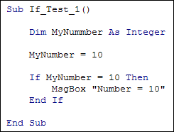
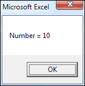
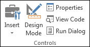
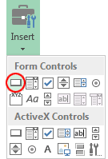
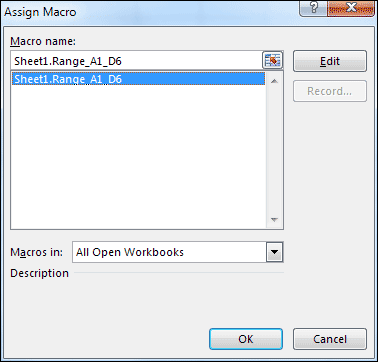
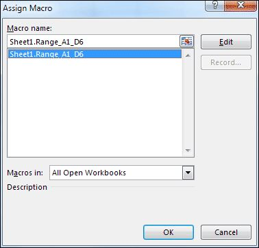
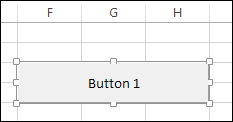
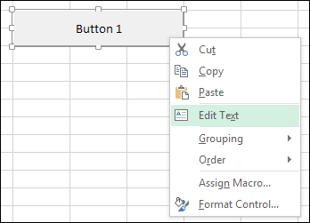
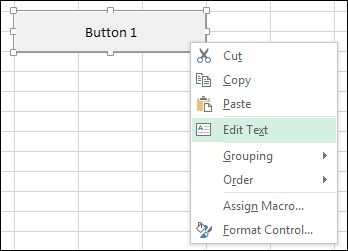
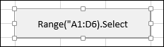
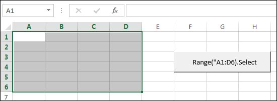
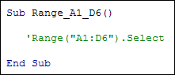
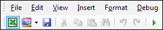
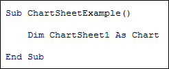
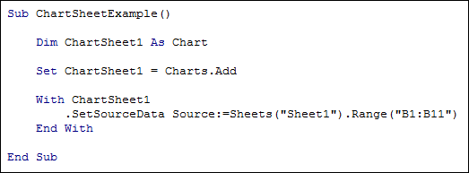
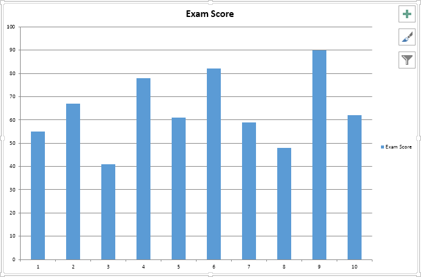
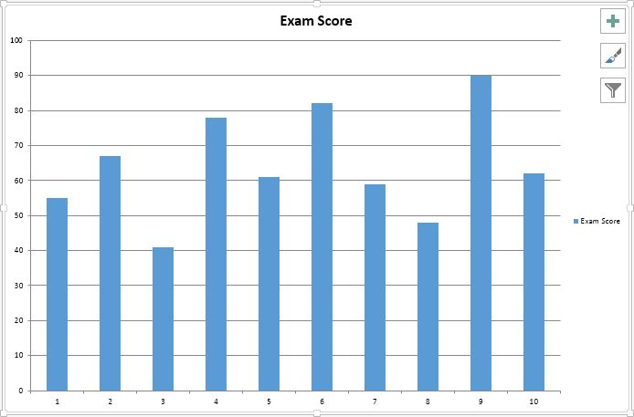
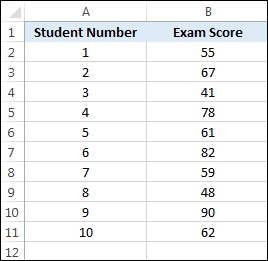
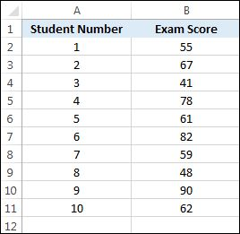
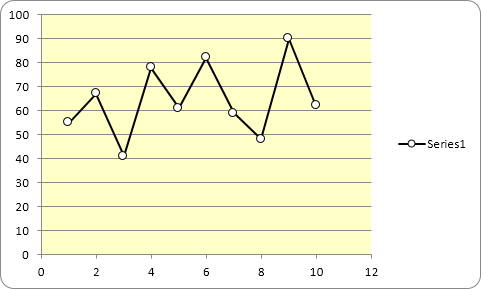
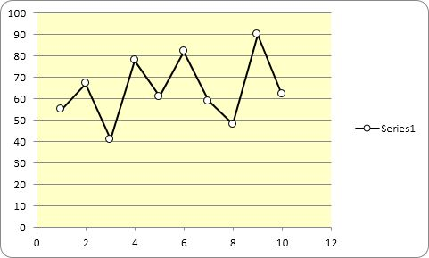
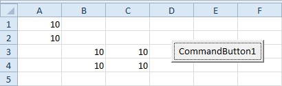
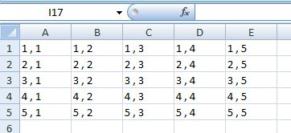
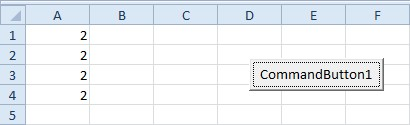
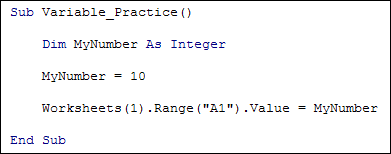
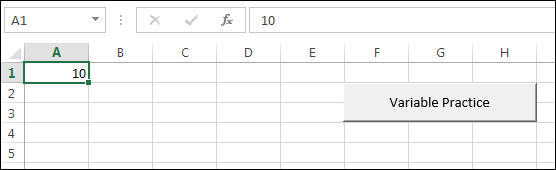
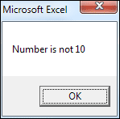
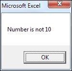
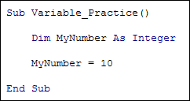
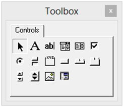
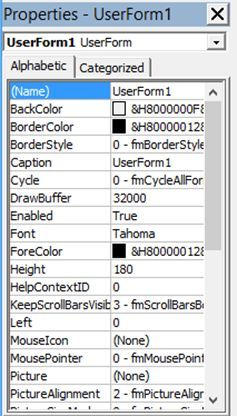